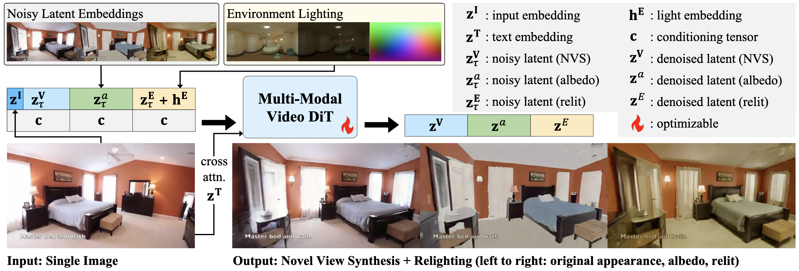

*Click left and right arrows to navigate the results.
Given a single image, user-defined camera trajectory, and lighting conditions, CamLit generates a novel view video, a paired relit video, and a paired albedo video with high fidelity.
We present CamLit, the first unified video diffusion model that jointly performs novel view synthesis (NVS) and relighting from a single input image. Given one reference image, a user-defined camera trajectory, and an environment map, CamLit synthesizes a video of the scene from new viewpoints under the specified illumination. Within a single generative process, our model produces temporally coherent and spatially aligned outputs, including relit novel-view frames and corresponding albedo frames, enabling highquality control of both camera pose and lighting. Qualitative and quantitative experiments demonstrate that CamLit achieves high-fidelity outputs on par with state-of-the-art methods in both novel view synthesis and relighting, without sacrificing visual quality in either task. We show that a single generative model can effectively integrate camera and lighting control, simplifying the video generation pipeline while maintaining competitive performance and consistent realism.

An illustration of CamLit pipeline. At the core of our framework is a multi-modal video DiT. This model takes as input a single RGB image, a camera trajectory, and an environment map. From these inputs, the model simultaneously generates a spatially and temporally aligned triplet of videos: (i) an RGB novel-view sequence under the same illumination as the input image, (ii) the corresponding relit sequence (with full shading from the environment map), and (iii) an albedo sequence capturing the scene's intrinsics without shading.
CamLit generates diverse contents under diverse lighting (shown in insets next to relit videos), making it a useful data augmentation tool for abundant single images
CamLit achieves comparable NVS results to dedicated SOTA NVS methods: Stable Virtual Camera and GEN3C.
CamLit achieves comparable relighting results to a dedicated SOTA relighting method: DiffusionRenderer. Lighting conditions are shown in insets next to relit videos.
CamLit achieves on par NVS results to its NVS-only version, showing that it incorporates relighting capacity without compromising NVS quality.